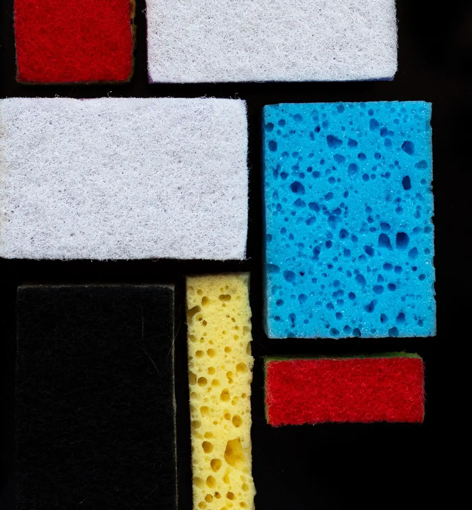

{kind=link}
Геометрія повсякденності
Серія “Mondrian Sponges” являє для мене оригінальну інтерпретацію знаменитого стилю нео-пластицизму, створеного Пітом Мондріаном.


Створення цієї серії дало можливість мені виринути із військових новин та ракетних атак, віднайти психологічну рівновагу та прийти до більш-менш нормального життя. Кожний день створюючи композицію для наступної фотографії, я лікувалась кольором, вивчала гармонії поєднання та взаємодію текстур та форм.
Серія “Mondrian Sponges” являє для мене оригінальну інтерпретацію знаменитого стилю нео-пластицизму, створеного Пітом Мондріаном.

Замість традиційних фарб і полотен я використовувала кухонні губки, які розташовані таким чином, що нагадують культові роботи художника.

Яскраві кольори та текстури губок створюють враження гри зі сприйняттям, з’єднуючи світ мистецтва і повсякденні предмети побуту.


Ця серія фотографій підкреслює естетику у звичайних речах та спонукає побачити красу навіть у таких простих предметах, як губки для миття посуду.

{kind=link}
{kind=link}